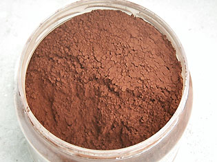
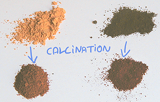
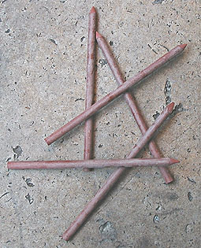

Les
terres rouges
Les terres rouges
contiennent du fer et s'extraient à l'état naturel ou s'obtiennent par
calcination artificielle des terres jaunes, oxydes de fer hydratés.
Selon certains auteurs, l'ocre rouge aurait été
employée avant l'ocre jaune (question, peut-être, de localisation
géographique).
Selon Anne Varichon,
le premier broyage attesté d'ocre rouge remonterait à 90 000 BC
(Nazareth). L'emploi des terres rouges
aurait en premier lieu trouvé un usage corporel. Paradoxalement, l'emploi de terres
jaunes coïnciderait avec les premières
calcinations de celles-ci, destinées à les faire rougir (voir
calcination)
! Faut-il y voir le souhait des artistes anciens, de pouvoir
synthétiser une couleur qu'ils ne pouvaient plus trouver à l'état
naturel, à cause, peut-être, de migrations ? La question reste
entièrement ouverte.
|
Sommaire
Rouge
vénitien, rouge indien, rouge anglais
Pigments
à base d'oxyde de fer
-
Calcination
-
Association
avec d'autres éléments
Sienne
brûlée, rouge de Pouzzoles, d'Ercolano, de Falun, rouge Van Dyck, ocre de chair,
macra, bol d'Arménie
La
sanguine, l'hématite
Terres
rouges en mélange, caractéristiques, utilisation |
Rouge vénitien, rouge indien,
rouge anglais
Le rouge vénitien, le splendide
rouge indien ou encore le
rouge
anglais sont tous des rouges opaques très colorants.
Elles sont bien plus rouges que
l'oxyde
de fer rouge pur (rouge de Mars) ou
l'ocre rouge, obtenus
directement par
cuisson de l'ocre jaune ou de
l'oxyde de fer jaune, "jaune de Mars".
Ces terres qui n'en sont pas toujours véritablement sont cependant très
permanentes.
Le vénitien est aujourd'hui
parfois de
fabrication synthétique (ce serait un "sulfate ferreux" adjoint de peroxyde de
plomb - un archaïsme - pour certains fabricants, dénué de peroxyde de plomb selon d'autres).
Un célèbre fabricant italien propose un rouge vénitien nettement plus
naturel, fait de trois terres : une jaune, une rouge et une brune. C'est
probablement la meilleure formulation.
Le rouge anglais,
en tant que pigment, est aujourd'hui chez les fabricants une sorte de
"synthèse à base de terres et d'autres minéraux" si l'on peut se permettre cette
expression. Typiquement, c'est un oxyde de fer rouge adjoint d'aluminosilicate de
sodium polysulfuré, c'est à dire de... bleu outremer
(lapis) !
D'où son aspect assez violacé. Certains fabricants prétendent se contenter
d'un simple oxyde de fer rouge, mais étant donné la couleur obtenue, il est
permis d'en douter. Il est probable qu'un violet de Mars ait été
discrètement adjoint, si
ce n'est un bleu outremer.
Mais
il existe un tout autre "rouge d'Angleterre". Il s'agit d'un
abrasif utilisé jadis par les lapidaires. Trop colorant, il fut remplacé par
la potée d'étain, elle-même remplacée à son
tour par différents produits. Le rouge d'Angleterre avait-il la même
composition et la même origine que le "rouge anglais", si l'on peut
poser la question de cette manière ? Ce dernier était-il non pas un
pigment, mais une couleur à proprement parler, c'est-à-dire par exemple la
teinte d'un objet volontairement coloré au rouge d'Angleterre, like
dyied wood for instance (*) ?
Tout cela est plausible, mais nous ne saurions le garantir pour le moment.
Lecture conseillée :
Le rouge anglais sur Pourpre.com
Le rouge indien est très proche
du rouge anglais, à tel point qu'il est difficile de les distinguer selon les
différentes fabrications. Certaines variétés sont réellement splendides :
couvrantes, colorantes (probablement très chargées en oxyde de fer), mais d'un rouge
affirmé. Une enquête sur ce pigment est en cours.
Dans l'ensemble, le terme de "sulfate ferreux", que l'on retrouve
de-ci de-là dans les compositions de ces trois pigments, semble en réalité
désigner l'ajout d'un bleu outremer (aluminosilicate de sodium polysulfuré)
donnant la teinte rouge profonde, un peu
violacée, qui caractérise ces pigments. Le rouge vénitien semble cependant un
cas à part. Violacé dans les gammes non italiennes, il est plus terreux et
probablement plus authentique dans
les gammes... italiennes.
Pigments
à base d'oxyde de fer
L'ocre rouge, le rouge de Mars (oxyde de fer pur) et la terre de Sienne brûlée ainsi que de nombreuses
autres couleurs contiennent principalement un oxyde de fer naturel ou obtenu
artificiellement par calcination (base Fe2O3).
Tous ces pigments contiennent de l'oxyde de fer débarrassé de la charge d'eau qui
maintient le composé hydraté dans sa teinte jaune.

Ce qui les distingue du point de vue du peintre, ce n'est pas seulement la
couleur. Le rouge de Mars, comme toutes les terres de Mars, dispose d'un pouvoir
colorant extraordinaire, si intense que les fabricants l'associent avec des
charges pour proposer des tubes de couleurs plus faciles à utiliser que le
pigment pur. En ce qui concerne ce dernier, il existe trois moyens de l'employer
:
* tel quel, pour former des aplats de couleur
intense, sans transparence
* très dilué ou ajouté d'une
charge incolore, en glacis
* en mélange avec une autre
couleur. Il doit alors être dosé en quantités homéopathiques.
D'un point de vue chromatique, l'ocre rouge est assez subtil, à l'instar de
son cousin jaune. Comme celui-ci, il peut avoir différentes qualités (RCLS,
RFLES, RFL, etc.), cuit ou naturel, souvent en provenance du Vaucluse ou de la
Nièvre (ocre de Puisaye).
La Sienne brûlée (voir photo ci-dessus) est encore
plus "sophistiquée", plus complexe par sa composition (lire
l'article consacré aux
terres de Sienne).

* Calcination
Ce procédé très simple date du paléolithique moyen (vers 40000 BC). Il
pourrait s'agir du premier procédé de transformation chimique réalisé par
un être humain.
La photo ci-contre montre en haut de l'ocre jaune à gauche et de l'oxyde de fer
brun à droite, et les mêmes produits après cuisson dans le bas.
Le
détail du processus est expliqué dans l'article sur les
oxydes de fer.
Dans cet article-ci, nous nous contenterons d'insister sur le fait que la
calcination peut être réalisée dans une cuisine avec une simple casserole.
*
Oxydes
de fer associés à d'autres éléments
Bien souvent, les terres rouges naturelles, moins pures que le rouge de Mars,
contiennent aussi de l'argile et d'autres
ingrédients comme le manganèse. Il existe donc des variétés finalement assez
différentes tant par leurs teintes que par leurs comportements et donc par
leurs emplois. Les savoirs traditionnels concernant les terres locales sont
souvent d'une grande pertinence car ils bénéficient d'une expérience humaine
de durée incomparable.
Sienne
brûlée, rouge de Pouzzoles, d'Ercolano, de Falun, rouge Van Dyck, ocre de chair,
macra, bol d'Arménie
Terre de Sienne brûlée -> voir terres de
Sienne.
Le rouge de Pouzzoles (terra rosa
de Pozzuoli), du nom d'un ville proche de
Naples est une ocre jaune légèrement calcinée, moins rouge que
l'ocre rouge. Une synthèse nommée orange de Mars ressemble un peu à cette
couleur.
Le rouge d'Ecorlano (Italie) est
un peu plus rouge.
Le rouge de
Falun (ville de Suède dotée d'un
gisement) est
nettement plus sombre sans être brun. Il semble plus ou moins violacé (voir violet
de Mars). Pourtant, il contient du cuivre. Appelée Falurîd (littéralement
rouge de Falun), cette couleur de très bonne tenue est extraite depuis le XIIIème
siècle et utilisée pour la décoration extérieure.
Le rouge Van Dyck est une variété
sans particularités spécifiques majeures que nous ne citons que pour mémoire.
Plus claire et plus rouge que le brun Van
Dyck, il pourrait s'agir d'une sorte de variante.
L'ocre de chair ou teinte chair
est censé offrir des carnations roses d'un goût discutable. C'est typiquement un
ocre rouge mélangé à du blanc (opération réalisable par un débutant). A ce sujet
lire l'article La carnation du glossaire.
Le rouge macra
proviendrait d'une terre rougeâtre. Tout ce que nous savons à son sujet et qu'il
était l'un des trois rouges employés au moyen-âge pour peindre les
enluminures (les deux autres étant le cinabre et le minium - voir vermillons).
Toute information sera la bienvenue.
Le bol d'Arménie --> lire
l'article du glossaire.

La
sanguine, l'hématite
La sanguine est traitée dans un article séparé.
L'hématite est référencée dans le glossaire
ainsi que dans l'article consacré aux oxydes de
fer.
Terres
rouges en mélange, caractéristiques, utilisations
En association avec un bleu outremer, ces terres
donnent des violets et des mauves impurs, des bruns intéressants, gagnant à être rehaussés
de blanc. Pures et adjointes de blanc, elles donnent de joyeux roses saumon
utilisés depuis longtemps.
Les couleurs dérivées de l'oxyde de fer rouge sont très permanentes, non
toxiques et utilisables à l'extérieur : elles résistent aussi bien que les oxydes
de fer jaunes.
Comme ceux-ci, elles sont utilisées en dorure : elles
servent de sous-couche devant recevoir une feuille d'or qui sera brunie par
polissage (voir agate).
Lire aussi Terres
jaunes.
_____
(*)
"Comme du bois teint pas exemple". Pour revenir au corps du texte, cliquez
sur le bouton "Précédent" de votre navigateur.
Retour
début de page